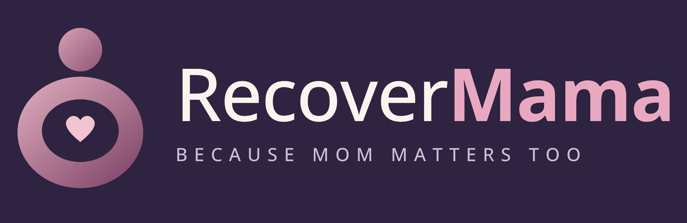

Six gentle moves for the feed, the bed and the morning. Two minutes each. One free hand is enough.
It isn't in your head. It's the math of looking down at someone you love, eight to twelve times a day.
What your head weighs when it sits level over your shoulders.
How heavy it can feel to your neck looking down at about 60° (Hansraj, 2014).
Roughly how long a day a new mom spends looking down: feeds, burps, phone at 3am.
Hold anything heavy for hours and the muscles holding it get tired and tight. That's what happens across the back of your neck and the tops of your shoulders. Meanwhile the small muscles at the front of your neck, the ones that hold your head up straight, barely get used.
So the goal is simple: loosen what's been holding on all day, wake up what's been switched off, and give your neck a better night. That's all this guide does.
2 moves you can do with the baby on you. Seated, one hand.
2 moves lying down, plus how to settle onto your pillow.
2 moves before you pick anyone up.
Slow beats strong. Every move is gentle. If you're straining, do less.
Breathe out on the stretch. Your shoulders drop on the exhale.
Stretch, never pain. A mild pull is right. Sharp, pinching or tingling means stop.
Any day counts. Do one moment, not all three. Something beats nothing.
You'll feel: a light stretch at the base of your skull and the front of your neck switching on. That's the "head up straight" muscle waking up.
You'll feel: the tops of your shoulders let go. Most moms notice they were holding them up the whole feed.
Every time you switch sides or burp, lift your eyes to the far wall for 3 breaths and let your head follow back to level. It undoes the downward hang a few times an hour without adding a single minute to your day.
Moves help. A better position helps all day. These five changes take seconds and add up fast.
Bring baby up to you, not you down to baby. Stack a pillow under the baby until their mouth is level with your chest. Your back should touch the chair.
Prop the elbow. A cushion under the arm holding the baby means your shoulder isn't carrying their weight for 30 minutes.
Feet up. A stool, a box, a stack of books. It tips your hips back so you stop curling forward.
Switch your gaze side. If you always look down to the left, your neck always twists the same way. Swap which side you sit on in bed and which shoulder you burp on.
Phone at eye level. At 3am, hold the phone up in front of your face instead of in your lap. Same scroll, a fraction of the load.
Carrying a car seat? Hold it in front of you with both hands, close to your body, or hook it on your forearm against your hip. One hand down at your side pulls your whole neck and shoulder sideways.
You'll feel: the stiffness from the day loosen without any stretch at all. Small and slow is the whole trick.
You'll feel: your chest and upper back open, the exact opposite of the feeding hunch.
On your back: head in the low center. On your side: move onto a raised side wing so your head stays level with your spine, and let your bottom arm rest in front of you in the arm cutout instead of under the pillow. Give it two nights; a new shape always feels new at first.
You'll feel: a long stretch down the side of your neck into the top of your shoulder. That's the muscle that does the most holding.
You'll feel: your chest open and your shoulders sit back where they belong. Tight chest muscles are half of what pulls you into a hunch.
3 Chin Glides, 1 Shoulder Melt, 1 Doorway Opener. Done before the kettle boils.
Tick a box when you do a moment. Rate your neck when you wake up. By night 7 you'll see your own pattern.
| Night | Feed moves 1+2 | Bed moves 3+4 | Morning moves 5+6 | Neck on waking 1 stiff · 5 easy |
|---|---|---|---|---|
| Night 1 | 1 2 3 4 5 | |||
| Night 2 | 1 2 3 4 5 | |||
| Night 3 | 1 2 3 4 5 | |||
| Night 4 | 1 2 3 4 5 | |||
| Night 5 | 1 2 3 4 5 | |||
| Night 6 | 1 2 3 4 5 | |||
| Night 7 | 1 2 3 4 5 |
1 · Chin Glide
Chin straight back, 5 × 3 breaths
2 · Shoulder Melt
Up on the inhale, drop on the exhale, 3 ×
3 · Slow Yes, Slow No
10 tiny nods, 5 easy turns each way
4 · Open Book
On your side, open the top arm, 5 each side
5 · Ear to Shoulder
Anchor one hand, tip the ear, 30 s each
6 · Doorway Opener
Forearms on the frame, step through, 30 s × 2
These moves are gentle comfort stretches, not treatment. Your body has just done something huge, so listen to it.
Had a C-section or a tough birth? Check with your provider before the Open Book (move 4) and skip anything that pulls on your scar. A postpartum physical therapist is one of the best people a new mom can see. Many moms say they wish they'd gone sooner.
You spend every hour looking after someone else. This is two minutes that's just for you. Do what you can, skip what you can't, and let your Night Shift Pillow handle the rest while you sleep.
Questions? Just reply to your order email. A real person reads every one.
This guide shares general comfort and posture tips for adults. It is not medical advice and does not diagnose, treat or prevent any condition. Stop any move that causes pain. © 2026 RecoverMama · recovermama.com